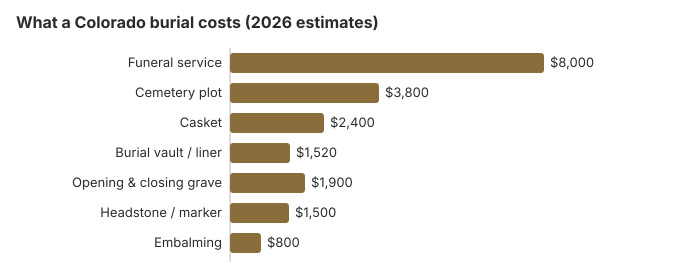

Burial Costs in Colorado (2026)
Colorado gives families more choices about burial than many states, including burial on private land when it is recorded properly. A conventional burial here still costs $18,120 to $22,620 by our estimate, split between the funeral home and the cemetery. This page breaks down each charge, explains the disposition permit and the 30-day land record, and shows where a Colorado family can save.
Colorado Burial Prices by Item
| Part of the burial | Colorado estimate | Typical range |
|---|---|---|
| Funeral service | $8,000 | $6,000 – $10,400 |
| Cemetery plot | $3,800 | $1,900 – $7,600 |
| Casket | $2,400 | $800 – $6,400 |
| Burial vault / liner | $1,520 | $800 – $10,000 |
| Opening & closing grave | $1,900 | $500 – $3,000 |
| Headstone / marker | $1,500 | $500 – $5,000+ |
| Embalming | $800 | $500 – $1,500 |
What these numbers are: modelled figures for Colorado, not prices we gathered from any Colorado cemetery or funeral home, and not an offer from anyone. For how they are built, see our method and the disclaimer.

Including every cemetery fee as well as the funeral home's bill, our Colorado estimate is $18,120 to $22,620, with the casket and the cemetery deciding most of where a family lands.
Family Burial and Other Colorado Options
Colorado allows home and family burial in parts of the state, with some restrictions, and families near Denver can usually reach at least one alternative such as a green burial ground, a conservation cemetery or a family plot. A private-land burial must be recorded with the county within 30 days, as explained below, but the options here are broader than many families expect. Before choosing private land, check that local zoning and any homeowners' rules allow it, and remember that a later sale of the land does not move the grave.
Burial Resources
- Funeral Consumers AllianceNonprofit consumer advocacy for funeral pricing
- Headstone & Monument GuideCosts, types, and buying tips
- Green Burial OptionsEco-friendly and natural alternatives
- Best Online Casket RetailersCaskets bought online often cost less
- Best Burial InsuranceCompare plans to cover burial expenses
Compare Funeral Costs
- Average Funeral Cost in 2026National cost breakdown with real prices
- Cremation vs. Burial Cost ComparisonSide-by-side price comparison to help you decide
- Funeral Cost BreakdownEvery line item explained: know what you're paying for
- Cheapest Funeral OptionsLower-cost alternatives, with typical price ranges
- Direct Cremation: Most Affordable OptionNFDA 2023 median $2,645 with a family-supplied container (latest available)
- How to Compare Funeral PricesStep-by-step guide to getting the best price
Choosing a Type of Burial in Colorado
- It is the most expensive option but provides the most traditional experience.
- Green burial: No embalming, biodegradable container, and a natural setting; ask which Colorado cemeteries allow it. Learn about green burial
- Mausoleum entombment: Above-ground placement in a mausoleum; Colorado crypt prices are not in the table, so ask each cemetery.
Ways to Lower a Burial Bill in Colorado
Ways a Colorado family can bring the burial bill down:
- Ask several cemeteries for prices. The FTC Funeral Rule does not cover most cemeteries, but most in Colorado will share a price sheet if you ask.
- Check the season. Mountain-town cemeteries in Colorado may not dig in midwinter, which can mean months of storage before burial.
- Ask the county clerk. Rural Colorado cemetery fees are often on file only with the county clerk, and such county rates can be 40 to 60% below Denver's private cemeteries.
- Family or home burial where allowed: Colorado is among the states most open to family and home burial, and where it is possible it can remove cemetery fees altogether while still satisfying state rules; our home funeral guide covers the paperwork. Once a funeral home is involved, a clock starts. Under C.R.S. 12-135-106, the establishment must embalm, refrigerate, cremate, bury or entomb the remains within twenty-four hours of taking custody, so ask how that first day of care is billed.
- Ask whether a liner will do. A grave liner costs much less than the $1,520 vault in our Colorado table and may satisfy the cemetery.
- Skip the extras. Direct or green burial leaves out the viewing, service and embalming, and can bring the bill well below the $8,000 Colorado funeral service estimate.
For ways to bring a Colorado burial bill down, see our affordable funeral options guide or payment assistance programs.
Frequently Asked Questions
What does each part of a Colorado burial cost?
Our Colorado estimate: about $8,000 for the funeral home's service, $3,800 for a plot, $2,400 for a casket, $1,520 for a vault and $1,900 for opening and closing, plus a headstone at $500 to $5,000. In all, $18,120 to $22,620.
Does a Colorado cemetery require a vault?
Usually, under the cemetery's own policy rather than Colorado law. Ask the specific cemetery what it requires and whether a cheaper liner is accepted; vaults in Colorado cost $800 to $10,000.
What is the lowest-cost burial in Colorado?
Direct burial, without embalming, a viewing or a service, is the cheapest burial a Colorado funeral home offers. Green burial, in a biodegradable container with no embalming, is the next step up and is offered at more Colorado cemeteries over time.
How can I compare Colorado cemeteries?
Look outside the Denver area. Rural cemeteries handled through county clerks often charge far less than private cemeteries around Denver, though winter closures at elevation can push back the burial date.
What costs come on top of a Colorado burial estimate?
Expect a short list of extras. In Colorado, as elsewhere, the funeral home buys death certificate copies, the obituary listing and flowers for you and adds those costs after the $18,120 to $22,620 total.
Is green burial an option in Colorado?
In some areas. Natural burial grounds are not found across all of Colorado, and some cemeteries have a hybrid section instead. Our green burial guide covers the options; then call cemeteries near you to confirm what they offer.
More for Colorado
Colorado's disposition permit and the 30-day land record
No Colorado body may be buried, cremated, placed in a vault or taken out of the state until a disposition permit is approved. The county's vital records office issues it, or the coroner where no such office exists, and the funeral director or the family member handling the death has to obtain it (C.R.S. § 25-2-111; checked October 29, 2026).
A burial on private land brings one more step. Within 30 days, the landowner records the burial with the county clerk and recorder: the name as it reads on the death certificate, date of birth, age, cause of death, the owners and legal description of the land, and GPS coordinates verified by two witnesses or by the coroner or sheriff. Public cemeteries and commercial ones open to everyone are exempt from that filing.
Colorado burial regulators and public help
Funeral homes in Colorado register with the Colorado Department of Regulatory Agencies, which takes registration questions and complaints at 303-894-7800; cemeteries may have a separate regulator. Starting January 1, 2027, Senate Bill 24-173 (C.R.S. 12-135-501) requires funeral directors and embalmers to hold an individual license, with a provisional license for those who apply before then without the new qualifications.
A funeral director is not required for a Colorado burial; the Funeral Consumers Alliance does not list Colorado among the nine states that require one. The family can deal with the cemetery directly on the plot, the grave opening and the container. Once the permit is issued the burial can go ahead, and cremation has no fixed waiting period, though it needs a permit (C.R.S. § 12-135-307).
Help with the cost
Colorado Burial Assistance pays the provider at most $1,500 for an eligible public-assistance recipient, and only when the entire funeral and burial bill is $2,500 or less. (Source: Colorado DHS Adult Financial Reference Guide (Burial Assistance).) The $255 Social Security payment, paid only to a surviving spouse or child, would not cover the $3,800 plot we estimate for Colorado.
At a VA national cemetery, an eligible veteran's grave, burial and headstone come without charge. Colorado has three VA national cemeteries taking burials: Fort Logan (303-761-0117), Fort Lyon (719-391-6920) and Pikes Peak (719-391-6920), plus the state's Veterans Memorial Cemetery of Western Colorado (970-263-8986) (source: VA National Cemetery Administration).
What to do next in Colorado
- Ask each cemetery for its grave, opening, liner and marker charges as a separate quote.
- At elevation, check whether graves are opened in winter.
- For burial on private land, plan to record the location with the county within 30 days.
- Ask the county human services office whether the $2,500 Burial Assistance limit counts the plot and opening before choosing a cemetery.
- For a veteran, ask Fort Logan National Cemetery about eligibility before buying a private plot.
- If a funeral home misleads you about burial costs, a complaint call to 303-894-7800 is free.